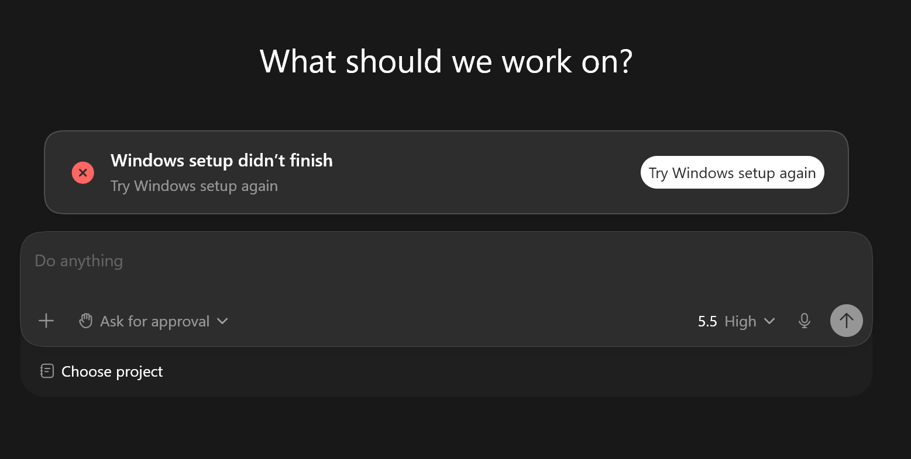
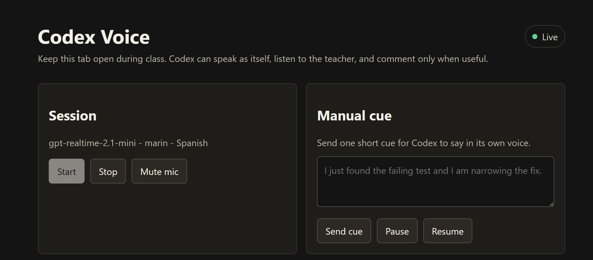

I have been teaching more and more classes about the Codex app. Some students are developers. Many are not. That difference matters.
A technical audience reads a busy Codex workspace as proof: projects, threads, skills, automations, plugins, long-running agents. It signals a tool built for serious work. A nontechnical audience reads the same screen as a warning: this isn't for me.
codex-classroom exists to fix that.
It's a small toolkit for teaching Codex live. I built it fast, because I needed it for real classes, and rough as it is, it already changed how I teach.
Start with an empty room
The first feature is classroom profiles. Before class, I swap my normal Codex state for a clean one. Students see a fresh app, not my daily workspace.
My real environment is full of things useful to me and distracting to a beginner: old chats, active projects, installed skills, plugin setup, automations, habits baked into the interface. For a room with people who don't code, all of that is noise.
I also want to teach from my Pro account, because that is where I can use Codex the way I actually use it: stronger models, configured plugins, higher limits, subagents, and Fast mode. I want to push the tool hard during class without paying for a second Pro account just to keep the screen clean. In a classroom, speed isn't a luxury. Waiting breaks attention.

The effect is small but real. I start from zero without pretending to be a new user, and show students the exact friction they'll hit on day one: workspace setup, sandbox setup, choosing a project folder, deciding what Codex can touch.
Once that moment passes, I drop the classroom profile and restore my real workspace. Start gentle. Show the advanced loops, skills, and automations later.
Let Codex speak for itself
The second feature is Codex Voice. Long Codex threads are brutal to teach live. A good workshop can run a 20 or 30 minute agent loop: Codex inspects a codebase, runs commands, hits errors, fixes tests, revises files, checks its own work. That's exactly why Codex is useful, it stays in the loop while the class thinks at a higher level. The hard part is helping the room track what matters while it runs.
Students can't read every update at Codex speed. Many don't know the vocabulary yet. Even the ones who do face a wall of text, a bad classroom interface.
I wanted Codex to speak.
Codex Voice runs on
gpt-realtime-2.1-mini,
OpenAI's low-latency voice and text model. The browser opens a
live audio session. A Codex skill sends compact cues about what's
happening in the thread, and the model turns those cues into short
spoken updates.

The teacher talks to it too, and that part matters. I didn't want a one-way audio feed. I wanted a conversation between the professor, Codex, and the room.
It listens while I explain, stays quiet on command, resumes when useful, and answers questions about the current thread. A small context bridge feeds it a compact view of the work: prompts, commands, tool results, checks, recent cues. It doesn't need every token. It needs the right fragment, updated often enough to answer the professor and keep the class oriented.
What I've learned so far
Both features came from the same problem: watching students check out before the real lesson started. A clean profile buys the first ten minutes. Codex Voice buys the next thirty.
Neither one teaches the class. I still explain the codebase,
write the exercises, watch the room. codex-classroom
just removes two specific reasons students stop following
before that work begins.
I built it fast, I use it in real classes, and I'm still finding out what breaks.